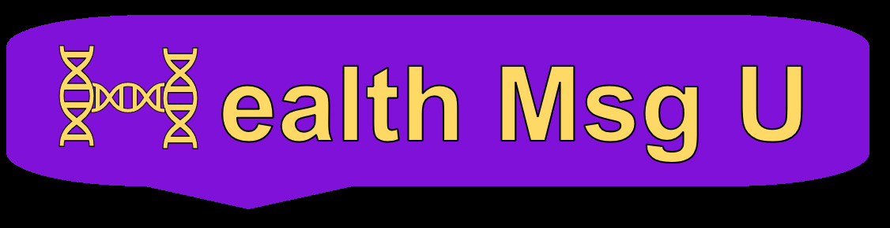

Top

About
Contact Us
Map
Word Cloud
Word Frequency
Word Cloud
Word(s): HIV, World's Aid Day
Type
Positive
Negative
Neutral
Word Frequency Table
Word(s): HIV, PrEP
#
Word
Frequency
1
Drug
5000
2
Everyday
4816
3
Pill
3670
4
STD
2811
5
Protection
1962